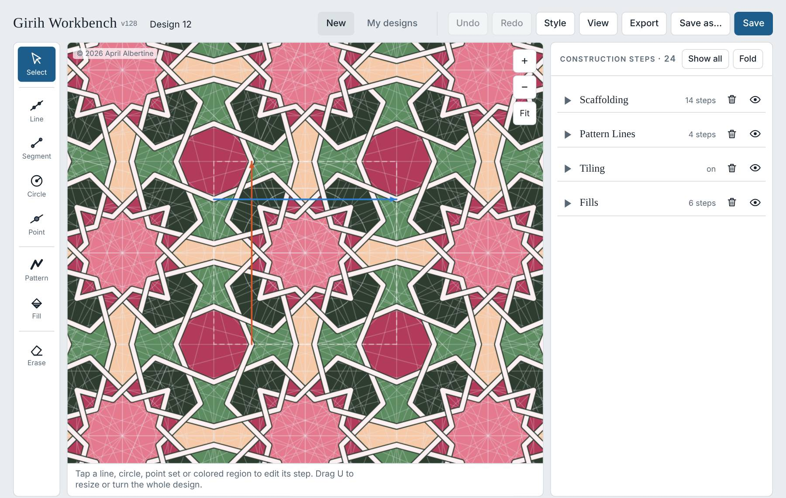
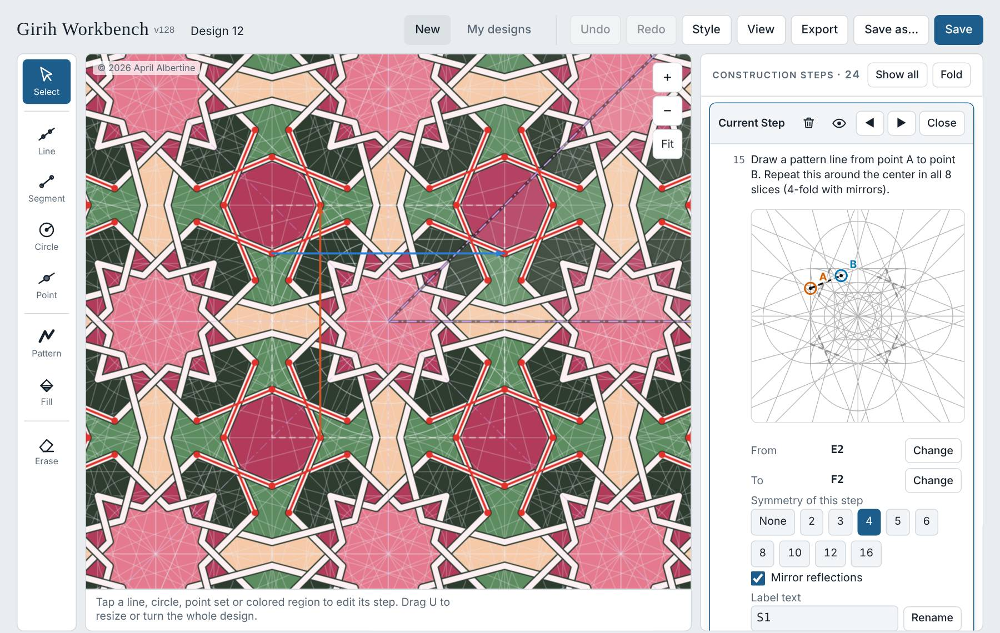
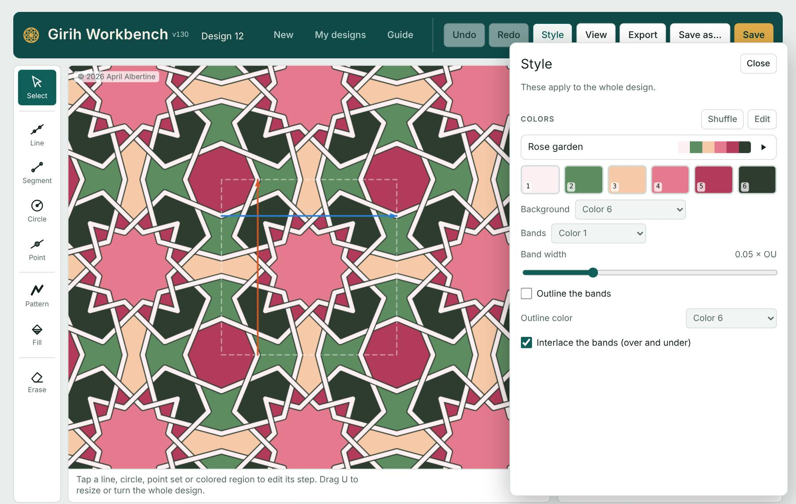
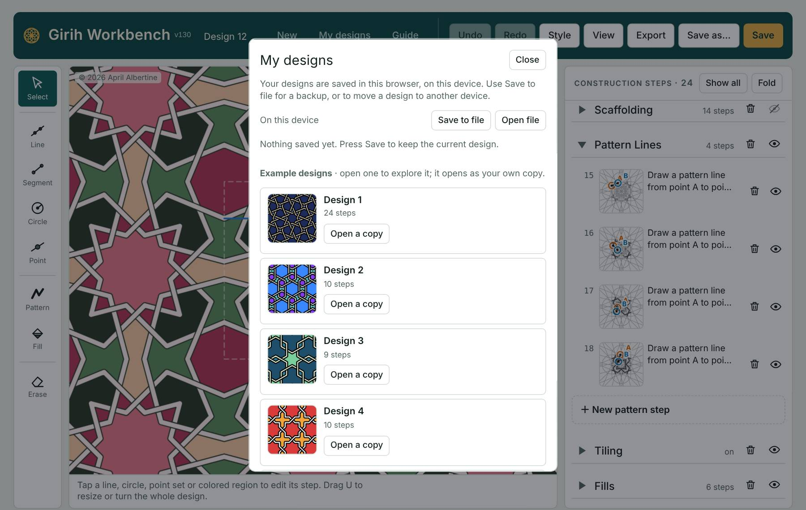

Girih Workbench lets you design Islamic geometric patterns the traditional way: one compass-and-straightedge step at a time. You build a scaffolding of circles and lines, draw the pattern on top of it, repeat it across the page, and color it.
1. The screen

Tools on the left, the drawing in the middle, the construction steps on the right.
Top bar. The design’s name (click it to rename), then New, My designs and Guide. The buttons on the right act on the design you have open: Undo, Redo, Style, View, Export, Save as… and Save.
Tools (left). Select, Line, Segment, Circle, Point, Pattern, Fill and Erase.
Drawing (middle). The +, − and Fit buttons zoom. You can also zoom with the scroll wheel or by pinching, and drag the drawing to move around. The bar underneath always tells you what to tap next.
Construction steps (right). Every step you make is listed here in four groups: Scaffolding, Pattern Lines, Tiling and Fills.
O, U and the unit length
Every design starts with two points: the center O and the unit point U. The distance from O to U is the unit length that everything else is built from. With the Select tool you can drag U to resize or turn the whole design.
2. Your first pattern
Click New and choose Circle in a square. You get a circle around O with a square drawn around it.
Open View and turn on Show points so you can see where lines and circles cross.
Choose the Line tool. Tap two points to draw a line through them. Notice that the line is repeated around the center: that is the symmetry at work.
A new step appears on the right as a draft. Adjust it if you like, then click Save (or press Enter). Drawing the next thing also saves it.
Add a few more lines and circles until you have crossings where you want the pattern to go.
Choose the Pattern tool and tap from point to point to draw the pattern lines. Tap the last point again to stop.
Click the eye next to Scaffolding to hide the construction and see the pattern on its own.
Choose Fill, pick a color, and tap inside the regions to color them.
Click Save.
Not sure where to begin? Open My designs and try one of the Example designs. Step through it with the arrows in the steps panel to see how it was built.
3. The drawing tools
All drawing is done by tapping points. Points snap, so you don’t need to be exact. Tapping anywhere along a line or circle makes a new point at that spot.
Tool
What it does
Select
Tap a line, circle, point or colored region to open its step. Tap an empty region between pattern lines to start a new fill. Drag U to resize or turn the design.
Line
A straight line through two points, extended across the page. Lines are scaffolding.
Segment
A straight line that stops at its two end points. Segments are scaffolding. A segment can be changed into a full line later, from its step.
Circle
Two ways to set the compass. Through a point: tap the center, then a point on the circle. Copy a length: tap two points to set the compass width, then tap the center.
Point
A point you place freely on a line or circle. If you tap near a crossing, the point snaps onto it. It gets a letter (A, B, …), and you can drag it along the object it sits on.
Pattern
The finished design. Tap from point to point; tap the last point again, or click Finish this line, to stop. Pattern lines are drawn as bands and close off the regions you can fill.
Fill
Pick a color, then tap inside a region to color it.
Erase
Tap something to remove the step that made it, along with all its symmetric copies.
Changing your mind mid-line
If you’ve tapped the first point of a line and want to cancel, click Cancel in the bar under the drawing, press Backspace or Esc, or right-click the drawing.
4. Symmetry
Islamic patterns repeat around a center, so you only draw one slice and the workbench repeats it for you.
Symmetry for what you draw next appears in the steps panel when you start a new step. Choose the number of slices (None, 2, 3, 4, 5, 6, 8, 10, 12 or 16) and whether to add Mirror reflections.
Each step keeps its own symmetry. Open a step and change Symmetry of this step at any time. A 12-fold design can still have 4-fold or 6-fold steps in it.
The drawing slice. With Shade the drawing slice on (in View), the slice you are working in is lightly tinted.
Mirror lines. When a step uses mirror reflections, purple dash-dot lines show where the mirrors are. The two that border the drawing slice are bolder.

An open step: its instructions, a picture, the points it uses, and its symmetry. The shaded slice and the purple mirror lines show on the drawing.
5. Working with steps
The panel on the right lists the whole construction. Click a group’s heading to open or close it; Show all and Fold open and close every group.
Open a step by clicking it in the list or by tapping its object in the drawing with the Select tool. The step shows its written instructions and a small picture, with the points it uses marked A, B and C.
Change a step. Use the Change buttons to pick different points, change its symmetry, or rename its label. Steps built on it update automatically.
Move between steps with the ◀ and ▶ arrows. Close closes the step.
Hide a step with its eye icon. A hidden step isn’t drawn, and its points and crossings no longer snap. Click the eye again to bring it back.
Delete a step with its trash can. Undo brings it back.
Delete several at once. Hold Shift and click the steps you want, then delete them together.
Whole groups. Each group heading has its own eye (show or hide everything in the group) and trash can (delete everything in the group, after a warning).
If you delete or change a step that later steps depend on, the workbench tells you how many steps now need fixing.
6. Tiling: repeating the design
Tiling slides copies of your design across the page to make a continuous pattern.
Open the Tiling group and click Pick the repeat directions.
Tap two points for the first direction, then two points for the second, for example from one star center to the next. The points you can use are shown in orange: they are the ends and crossings of your pattern lines.
Use Copies in each direction to choose how far the pattern spreads.
The eye on the Tiling heading turns the repeats on and off.
Go to the original tile brings the view back to the tile you drew.
Clear the directions removes the tiling.
In View, Outline the original tile and Show the repeat-direction arrows show how the tiling is set up.
7. Fills: coloring regions
Choose the Fill tool, pick one of the numbered colors, and tap inside a region.
The fill follows the step’s symmetry, so matching regions around the center are colored together.
Regions are bounded by lets you choose whether only pattern lines, or all lines, form the edges of a region.
Tapping a region that is already colored opens its fill step, where you can change the color or the symmetry.
After you save a fill, the Fill tool stays ready for the next one.
The numbered colors come from the palette you choose under Style, so changing the palette recolors the whole design.
8. Style
Style opens a side panel for the look of the finished drawing. The drawing stays visible so you can watch it change.

Style settings apply to the whole design.
Colors. Choose a built-in palette, click Shuffle to move the colors around, or click Edit to change colors, add or remove one, and save your own palette.
Background and Bands. Leave these on Automatic, or choose any color from the palette.
Band width sets how thick the pattern lines are drawn.
Outline the bands and Outline color add a thin edge to the bands.
Interlace the bands weaves the bands over and under each other where they cross.
9. View
View controls what you see while you work. These settings don’t change the design itself.
Show scaffolding and Show points
Shade the drawing slice and Show mirror lines
Show the repeat-direction arrows and Outline the original tile
Labels for points, lines, segments, circles and pattern lines. To show or hide a single object’s label, open its step and use its Label setting.
10. Saving and My designs

My designs lists what you’ve saved, with the example designs underneath.
Save saves the open design. Save as… saves it as a new design under a new name.
My designs lists your saved designs. Each one can be opened, opened as a copy, renamed or deleted.
Where designs are kept. Your designs are saved in your browser, on the device you are using. They are not sent anywhere, and nobody else can see them. They won’t appear on another device or in another browser, and clearing your browser’s site data removes them.
Save to file and Open file (at the top of My designs) save a design as a small file on your device and open it again. Use them for backups, to move a design to another device, or to send a design to someone.
Example designs open as your own copy. Change them freely; the examples themselves stay as they are.
If you start a new design or open another one with unsaved changes, the workbench asks first.
11. Export
Export
What you get
SVG image
A picture that stays sharp at any size and opens in design apps.
PNG image
A picture at 2,000, 4,000 or 8,000 pixels on its long side.
Illustrated steps
The whole construction with a picture for every step, as a PDF or a web page. Good for printing and teaching.
Construction steps
The written steps as plain text, with point names.
Design file
Everything, to open in the workbench again later.
Images show what is on screen at that moment, so zoom and pan to frame the picture first. Tick Include the scaffolding lines if you want the construction in the image.
12. Shortcuts and tips
Key
Action
Ctrl/⌘ + Z
Undo
Ctrl/⌘ + Shift + Z
Redo (also Ctrl + Y)
Enter
Save the step you just drew
Backspace or Esc
Cancel a line you’ve started
Shift + click
Select several steps in the list
Build the scaffolding first. Pattern lines can only go from point to point, so make the crossings you need before you draw the pattern.
Hide what you’re done with. Hiding finished scaffolding steps keeps the drawing clear and stops their points from getting in the way.
Check the result often. Click the Scaffolding eye to flip between the construction and the finished pattern.
Phones and tablets. Everything works by touch: tap instead of click, pinch to zoom, and drag to move around. Style and View open from the bottom of the screen.